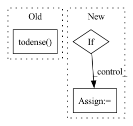

Pattern ID :38171
Before Change
def to_np(array, dtype=np.float32):
if "scipy.sparse" in str(type(array)):
array = array.todense()
return np.array(array, dtype=dtype)
def rot_mat_to_euler(rot_mats):After Change
def to_np(array, dtype=np.float32):
if "scipy.sparse" in str(type(array)):
array = np.array(array.todencse(), dtype=dtype)
elif = array.detach().cpu().numpy()
return array
In pattern: SUPERPATTERN
Frequency: 4
Non-data size: 3
Instances Fragment ID: 109387461
Project Name: otaheri/mano
Commit Name: 967ad130cc74689587a63ad8d7d22942e74ac058
Time: 2020-08-12
Author: omid.taheri.71@gmail.com
File Name: mano/utils.py
M Class Name: AnonimousClass
N Class Name: AnonimousClass
M Method Name: to_np(2)
N Method Name: to_np(2)
M Parent Class:
N Parent Class:
M File Name: mano/utils.py
N File Name: mano/utils.py
M Start Line: 38
M End Line: 39
N Start Line: 39
N End Line: 42
Before Change
mol_vecs = torch.stack(mol_vecs, dim=0) // (num_molecules, hidden_size)
if self.args.semiF_path:
semiF_features = np.stack([features.todense() for features in semiF_features])
semiF_features = torch.from_numpy(semiF_features).float().cuda()
return torch.cat([mol_vecs, semiF_features], dim=1) // (num_molecules, hidden_size)
return mol_vecs // num_molecules x hiddenAfter Change
if self.args.features:
features_batch = torch.from_numpy(np.stack(features_batch)).float()
if next(self.parameters()).is_cuda:
features_batch = features_batch.cuda()
return torch.cat([mol_vecs, features_batch], dim=1) // (num_molecules, hidden_size)
Fragment ID: 109387460
Project Name: aamini/chemprop
Commit Name: b458b250cc81267ae851a68cc6917be18204ee9d
Time: 2018-10-28
Author: swansonk.14@gmail.com
File Name: mpn.py
M Class Name: MPNEncoder
N Class Name: MPNEncoder
M Method Name: forward(3)
N Method Name: forward(3)
M Parent Class: nn.Module
N Parent Class: nn.Module
M File Name: mpn.py
N File Name: mpn.py
M Start Line: 122
M End Line: 315
N Start Line: 124
N End Line: 324
Before Change
//print(len(neg_edges))
rs = np.random.RandomState(seed)
A_u = nx.adjacency_matrix(G).todense()
indexes = np.where(A_u < 1)
indexes = np.c_[indexes[0],indexes[1]]
neg_index = rs.choice(np.arange(len(indexes)), size=int(np.sum(A_u)))After Change
row, col = edge_index[0], edge_index[1]
if size is None:
size = int(max(torch.max(row), torch.max(col))+1)
if data.edge_weight is None:
data.edge_weight = torch.ones(len(row))
A = coo_matrix((data.edge_weight.cpu(), (row, col)), shape=(size, size), dtype=np.float32).tocsr()
// create an undirected graph based on the adjacency
G = nx.from_scipy_sparse_matrix(A, create_using=nx.Graph, edge_attribute="weight") Fragment ID: 109387463
Project Name: sherylhyx/pytorch_geometric_signed_directed
Commit Name: eeeffe159fa0bd2b54e276e7605f8aaa238d8202
Time: 2022-02-18
Author: xzhang15@wpi.edu
File Name: torch_geometric_signed_directed/utils/directed/directed_link_split.py
M Class Name: AnonimousClass
N Class Name: AnonimousClass
M Method Name: directed_link_class_split(8)
N Method Name: directed_link_class_split(8)
M Parent Class:
N Parent Class:
M File Name: torch_geometric_signed_directed/utils/directed/directed_link_split.py
N File Name: torch_geometric_signed_directed/utils/directed/directed_link_split.py
M Start Line: 104
M End Line: 168
N Start Line: 100
N End Line: 162
Before Change
mol_vecs = torch.stack(mol_vecs, dim=0) // (num_molecules, hidden_size)
semiF_features = np.stack(semiF_features).todense()
semiF_features = torch.from_numpy(semiF_features).cuda()
print(semiF_features.size())
import pdb; pdb.set_trace()
return torch.cat(mol_vecs, semiF_features, dim=1) // (num_molecules, hidden_size)After Change
mol_vecs = torch.stack(mol_vecs, dim=0) // (num_molecules, hidden_size)
if self.args.semiF_path:
semiF_features = np.stack([features.todense() for features in semiF_features])
semiF_features = torch.from_numpy(semiF_features).float().cuda()
return torch.cat([mol_vecs, semiF_features], dim=1) // (num_molecules, hidden_size)
return mol_vecs // num_molecules x hidden Fragment ID: 109387456
Project Name: aamini/chemprop
Commit Name: 4018237525de3bf78069082d6a53a600550595ee
Time: 2018-10-16
Author: yangk@mit.edu
File Name: mpn.py
M Class Name: MPNEncoder
N Class Name: MPNEncoder
M Method Name: forward(3)
N Method Name: forward(3)
M Parent Class: nn.Module
N Parent Class: nn.Module
M File Name: mpn.py
N File Name: mpn.py
M Start Line: 114
M End Line: 292
N Start Line: 118
N End Line: 302